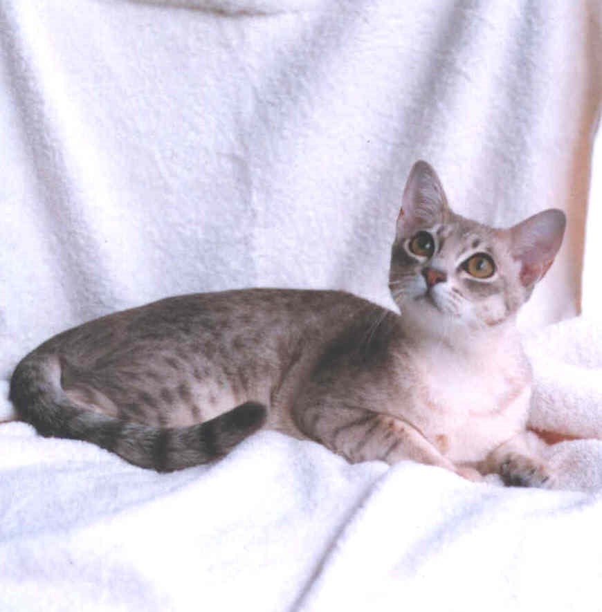

The seregeti is a breed of domestic cat, the first developed by crossing a Bengal(domestic and wild hybrid) and an Oriental Shorthair.
2.A male Serengeti, Orgin United States
The Serengetiis a breed of domestic cat,first developed by crossing a Bengal (domestic and wild hybrid) and an Oriental Shorthair.
3.A Blue Spotted Australian Mist Female, Other names Spotted Mist, Orgin Australia
The Australian Mist (formerly known as the Spotted Mist) is a breed of cat developed in Australia.

4.Peterbald, Origin russia, Domestic cat(Felis catus)
The Peterbald is a cat breed of Russian orgin. It was created in St Petersburg in 1994 from an experimental breeding by Olga S.Mironova.
5.Common nicknames Werewolf cat, Origin United States wolf cat
The Lykoi, also called the Werewolf cat,is a natural mutation from a domestic short-haired cat that has the appearance of a classic Hollywood werewolf, hence its name.